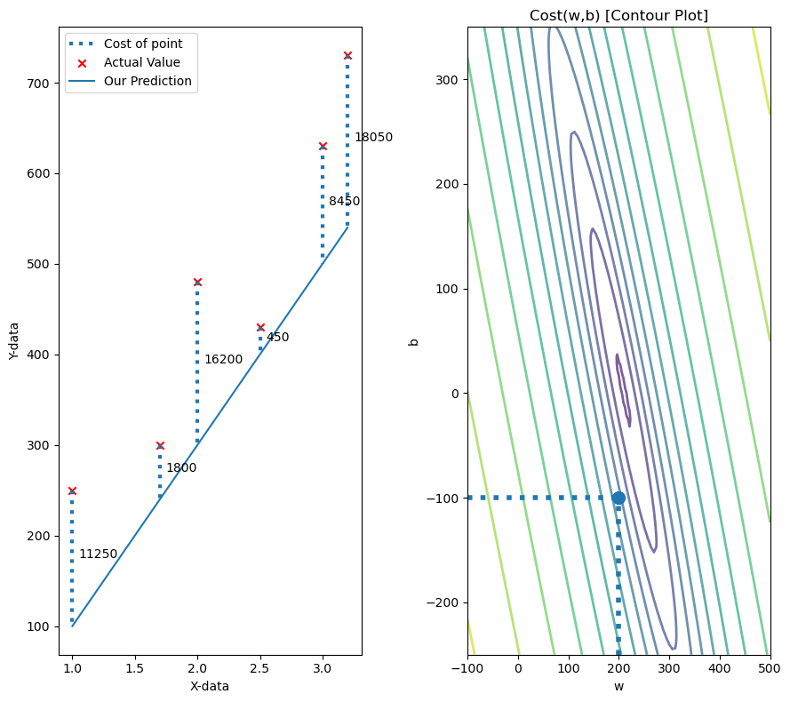
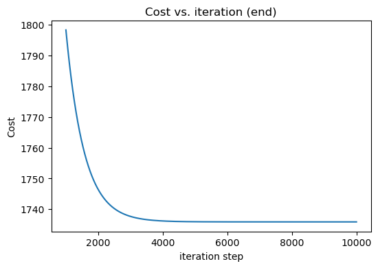
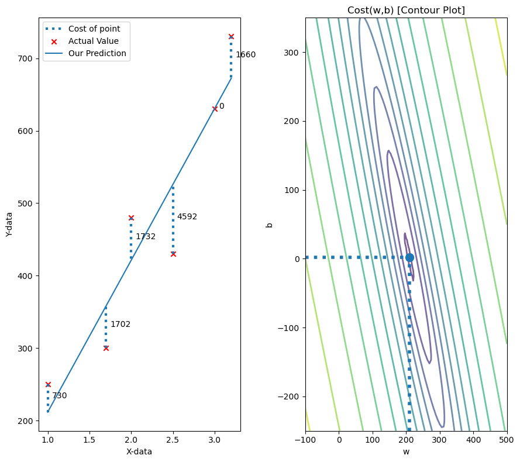
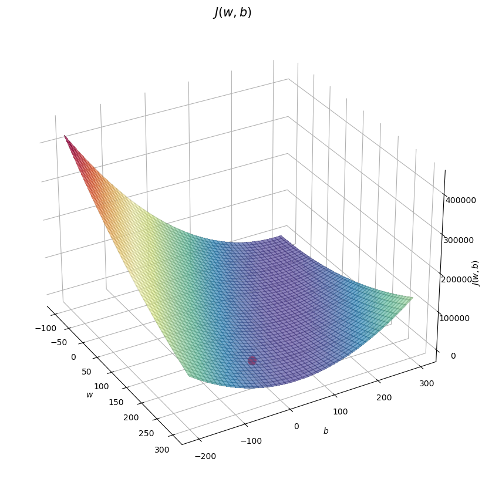

import numpy as np
import matplotlib.pyplot as plt
import mathLinear Regression With One Variable
Simple linear regression is a fundamental statistical method modeling the relationship between a single independent variable and a dependent variable. It identifies a best-fitting line that minimizes prediction errors, revealing trends and enabling data-driven predictions.
Libraries Required
Some Plotting Fxn
def plt_house_x(X, y, f_wb=None, ax=None):
ax.scatter(X, y, marker='x', c='r', label="Actual Value")
ax.set_ylabel("Y-data")
ax.set_xlabel("X-data")
ax.plot(X, f_wb, label="Our Prediction")
ax.legend()
def mk_cost_lines(x, y, w, b, ax):
label = 'Cost of point'
addedbreak = False
for p in zip(x, y):
f_wb_p = w*p[0]+b
c_p = ((f_wb_p - p[1])**2)/2
c_p_txt = c_p
ax.vlines(p[0], p[1], f_wb_p, lw=3, ls='dotted', label=label)
label = ''
cxy = [p[0], p[1] + (f_wb_p-p[1])/2]
ax.annotate(f'{c_p_txt:0.0f}', xy=cxy, xycoords='data',
xytext=(5, 0), textcoords='offset points')
def plt_stationary(x_train, y_train, w0, b):
fig, ax = plt.subplots(1, 2, figsize=(9, 8))
fig.canvas.toolbar_position = 'top'
w_range = np.array([200-300., 200+300])
b_range = np.array([50-300., 50+300])
b_space = np.linspace(*b_range, 100)
w_space = np.linspace(*w_range, 100)
tmp_b, tmp_w = np.meshgrid(b_space, w_space)
z = np.zeros_like(tmp_b)
for i in range(tmp_w.shape[0]):
for j in range(tmp_w.shape[1]):
z[i, j] = cost_fxn(x_train, y_train, tmp_w[i][j], tmp_b[i][j])
if z[i, j] == 0:
z[i, j] = 1e-6
f_wb = np.dot(x_train, w0) + b
mk_cost_lines(x_train, y_train, w0, b, ax[0])
plt_house_x(x_train, y_train, f_wb=f_wb, ax=ax[0])
CS = ax[1].contour(tmp_w, tmp_b, np.log(z), levels=12,
linewidths=2, alpha=0.7)
ax[1].set_title('Cost(w,b) [Contour Plot]')
ax[1].set_xlabel('w', fontsize=10)
ax[1].set_ylabel('b', fontsize=10)
ax[1].set_xlim(w_range)
ax[1].set_ylim(b_range)
cscat = ax[1].scatter(w0, b, s=100, zorder=10,)
chline = ax[1].hlines(b, ax[1].get_xlim()[0], w0,
lw=4, ls='dotted')
cvline = ax[1].vlines(w0, ax[1].get_ylim()[0], b,
lw=4, ls='dotted')
fig.tight_layout()
return fig, ax, [cscat, chline, cvline]
def soup_bowl(x_train, y_train, w0=200, b0=-100):
fig = plt.figure(figsize=(10, 10))
# Plot configuration
ax = fig.add_subplot(111, projection='3d')
ax.xaxis.set_pane_color((1.0, 1.0, 1.0, 0.0))
ax.yaxis.set_pane_color((1.0, 1.0, 1.0, 0.0))
ax.zaxis.set_pane_color((1.0, 1.0, 1.0, 0.0))
ax.zaxis.set_rotate_label(False)
ax.view_init(30, -30)
w = np.linspace(-100, 300, 100)
b = np.linspace(-200, 300, 100)
z = np.zeros((len(w), len(b)))
for i in range(len(w)):
for j in range(len(b)):
z[i, j] = cost_fxn(x_train, y_train, w[i], b[j])
W, B = np.meshgrid(w, b)
ax.plot_surface(W, B, z, cmap="Spectral_r", alpha=0.7, antialiased=False)
ax.plot_wireframe(W, B, z, color='k', alpha=0.1)
ax.set_xlabel("$w$")
ax.set_ylabel("$b$")
ax.set_zlabel("$J(w,b)$", rotation=90)
ax.set_title("$J(w,b)$", size=15)
cscat = ax.scatter(w0, b0, s=100, color='red')
plt.show()Dataset
x_train = np.array([1.0, 1.7, 2.0, 2.5, 3.0, 3.2])
y_train = np.array([250, 300, 480, 430, 630, 730])
w = 200
b = -100Finding Function f_wb
\[ f_{w,b}(x^{(i)}) = wx^{(i)} + b \]
def fxn(x, w, b):
f_wb = w * x + b
return f_wbFinding Cost Function
\[J(w,b) = \frac{1}{2m} \sum\limits_{i = 0}^{m-1} (f_{w,b}(x^{(i)}) - y^{(i)})^2\]
def cost_fxn(x, y, w, b):
m = x.shape[0]
f_wb = fxn(x,w,b)
cost = (f_wb - y) ** 2
total_cost = (1 / (2 * m)) * np.sum(cost)
return total_costSome Plots
Original w, b
fig, ax, dyn_items = plt_stationary(x_train, y_train, w, b)
soup_bowl(x_train, y_train, w, b)
Finding dJ/dw and dJ/db
\[ \frac{\partial J(w,b)}{\partial w} = \frac{1}{m} \sum\limits_{i = 0}^{m-1} (f_{w,b}(x^{(i)}) - y^{(i)})x^{(i)} \\ \frac{\partial J(w,b)}{\partial b} = \frac{1}{m} \sum\limits_{i = 0}^{m-1} (f_{w,b}(x^{(i)}) - y^{(i)}) \\ \]
def compute_gradient(x, y, w, b):
m = x.shape[0]
a = fxn(x, w, b) - y
dj_dw = (np.dot(a, x))/m
dj_db = np.sum(a)/m
return dj_dw, dj_dbGradient Descent
\[\begin{align*} \text{repeat}&\text{ until convergence:} \; \lbrace \newline \; w &= w - \alpha \frac{\partial J(w,b)}{\partial w} \; \newline b &= b - \alpha \frac{\partial J(w,b)}{\partial b} \newline \rbrace \end{align*}\] where, parameters \(w\), \(b\) are updated simultaneously.
def gradient_descent(x, y, w, b, alpha, num_iters):
J_history = []
p_history = []
for i in range(num_iters + 1):
dj_dw, dj_db = compute_gradient(x, y, w, b)
w -= alpha * dj_dw
b -= alpha * dj_db
cost = cost_fxn(x, y, w, b)
J_history.append(cost)
p_history.append((w, b))
if i % math.ceil(num_iters / 10) == 0:
print(f"Iteration {i:4}: Cost {cost:.2e}, w: {w}, b: {b}")
return w, b, J_history, p_history
iterations = 10000
tmp_alpha = 1.0e-2
w_final, b_final, J_hist, p_hist = gradient_descent(
x_train, y_train, w, b, tmp_alpha, iterations)
print(f"(w,b) found by gradient descent: {w_final},{b_final}")
f_wb = fxn(x_train, w_final, b_final)
print("Cost is", cost_fxn(x_train, y_train, w_final, b_final))
fig, ax = plt.subplots(figsize=(6, 4))
ax.plot(1000 + np.arange(len(J_hist[1000:])), J_hist[1000:])
ax.set_title("Cost vs. iteration (end)")
ax.set_ylabel('Cost')
ax.set_xlabel('iteration step')
plt.show()Iteration 0: Cost 8.46e+03, w: 202.80833333333334, b: -98.76666666666667
Iteration 1000: Cost 1.80e+03, w: 223.52137552092964, b: -32.28296188836681
Iteration 2000: Cost 1.75e+03, w: 215.18089273879156, b: -11.838434218472974
Iteration 3000: Cost 1.74e+03, w: 211.75363820423198, b: -3.4374097221896087
Iteration 4000: Cost 1.74e+03, w: 210.3453176127893, b: 0.014722492685807966
Iteration 5000: Cost 1.74e+03, w: 209.76661332681294, b: 1.4332657708600276
Iteration 6000: Cost 1.74e+03, w: 209.5288133168987, b: 2.0161707428604965
Iteration 7000: Cost 1.74e+03, w: 209.43109701154987, b: 2.255696890289678
Iteration 8000: Cost 1.74e+03, w: 209.39094362242898, b: 2.3541224966202314
Iteration 9000: Cost 1.74e+03, w: 209.37444387193037, b: 2.394567350284724
Iteration 10000: Cost 1.74e+03, w: 209.3676638273943, b: 2.4111868688115714
(w,b) found by gradient descent: 209.3676638273943,2.4111868688115714
Cost is 1735.8832116012204
Some Plots
Final w, b
fig, ax, dyn_items = plt_stationary(x_train, y_train, w_final, b_final)
soup_bowl(x_train, y_train, w_final, b_final)

Regularized Linear Regression
Finding Cost Fxn
\[J(\mathbf{w},b) = \frac{1}{2m} \sum\limits_{i = 0}^{m-1} (f_{\mathbf{w},b}(\mathbf{x}^{(i)}) - y^{(i)})^2 + \frac{\lambda}{2m} \sum_{j=0}^{n-1} w_j^2 \]
def cost_fxn_regularized(X, y, w, b, lambda_ = 1):
cost=cost_fxn(X, y, w, b)
cost += np.sum(w ** 2)
return costFinding dJ/dw and dJ/db
\[\begin{align*} \frac{\partial J(\mathbf{w},b)}{\partial w_j} &= \frac{1}{m} \sum\limits_{i = 0}^{m-1} (f_{\mathbf{w},b}(\mathbf{x}^{(i)}) - y^{(i)})x_{j}^{(i)} + \frac{\lambda}{m} w_j \\ \frac{\partial J(\mathbf{w},b)}{\partial b} &= \frac{1}{m} \sum\limits_{i = 0}^{m-1} (f_{\mathbf{w},b}(\mathbf{x}^{(i)}) - y^{(i)}) \end{align*}\]
def compute_gradient_regularized(X, y, w, b, lambda_):
m = X.shape[0]
dj_dw, dj_db = compute_gradient(X, y, w, b)
dj_dw += (lambda_ / m) * w
return dj_db, dj_dw